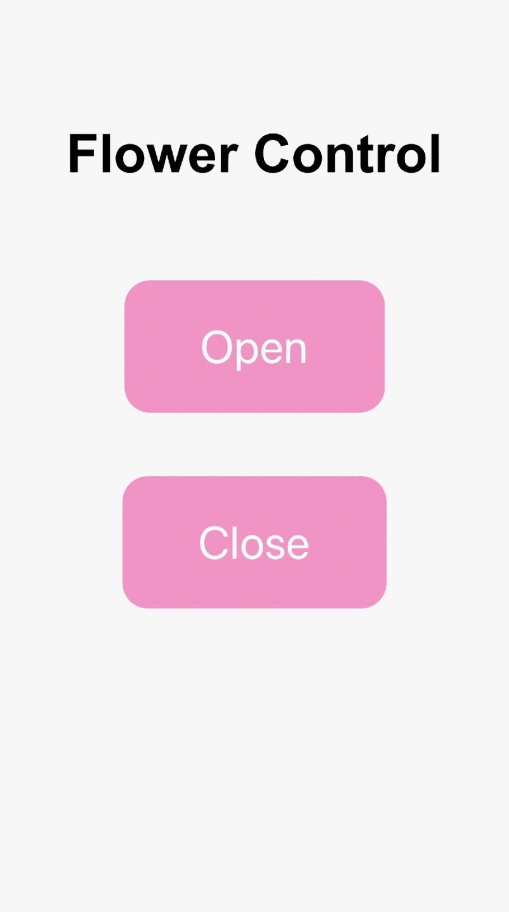

<div class="textcontainer">
<p class="margin"> </p>
<h3>Week 9: Radio, WiFi, Bluetooth (IoT)</h3>
<p class="margin"> </p>
<div class="flexrow">
<a id="btn" href="wk9.zip" download>Download my files from this week!
</a>
</div>
<p class="margin"> </p>
<h4>Assignment: [Program something with IOT]</h4>
<p>
For this project, I immediately thought about improving the progress of my final project. Before, I had operated my flower through a small button on my breadboard. However, after learning about the different options such as Wi-Fi, Bluetooth, and other communication methods, I decided to create a flower that could be controlled through my phone using the IP address. I created a small webpage with buttons labeled “Open” and “Close,” as shown in the picture below, which displays the interface on my phone.
</p>
<p>
The system ended up working very reliably. However, at the beginning I had several issues because the servos were not reacting properly. Sometimes they worked, sometimes they did not, and occasionally only one servo would respond while the others would not move at all. After troubleshooting the setup for a while, I realized that I had not included an antenna. Once I added the antenna, the movements became much smoother and all of the motors responded correctly and consistently.
</p>
<p>
I also experimented with the code several times to create different buttons and control the direction in which the motors moved, determining whether the flower opened or closed. In the end, I settled on the display and code shown below.
</p>
<p></p>
<h4>Arduino Code</h4>
<pre style="background-color: #111; color: white; padding: 20px; border-radius: 10px; overflow-x: auto;">
<code>
#include &lt;WiFi.h&gt;
#include &lt;WebServer.h&gt;
#include &lt;ESP32Servo.h&gt;
// WiFi credentials
const char* ssid = "MAKERSPACE";
const char* password = "12345678";
WebServer server(80);
// Servos
Servo servo1, servo2, servo3;
int servoPin1 = D0;
int servoPin2 = D1;
int servoPin3 = D2;
int closedPos = 0;
int openPos = 90;
int currentPos1 = closedPos;
int currentPos2 = closedPos;
int currentPos3 = closedPos;
// Slow movement function
void moveServoVerySlow(Servo &servo, int &currentPos, int targetPos) {
if (currentPos < targetPos) {
for (int pos = currentPos; pos <= targetPos; pos++) {
servo.write(pos);
delay(20);
}
} else {
for (int pos = currentPos; pos >= targetPos; pos--) {
servo.write(pos);
delay(20);
}
}
currentPos = targetPos;
}
// OPEN
void openFlowers() {
moveServoVerySlow(servo1, currentPos1, openPos);
moveServoVerySlow(servo2, currentPos2, openPos);
moveServoVerySlow(servo3, currentPos3, openPos);
server.send(204);
}
// CLOSE
void closeFlowers() {
moveServoVerySlow(servo3, currentPos3, closedPos);
moveServoVerySlow(servo2, currentPos2, closedPos);
moveServoVerySlow(servo1, currentPos1, closedPos);
server.send(204);
}
// WEBPAGE
void handleRoot() {
server.send(200, "text/html",
"&lt;!DOCTYPE html&gt;"
"&lt;html&gt;"
"&lt;head&gt;"
"&lt;meta name='viewport' content='width=device-width, initial-scale=1.0'&gt;"
"&lt;style&gt;"
"body { font-family: Arial; text-align: center; padding-top: 60px; background: #f7f7f7; }"
"h1 { font-size: 42px; margin-bottom: 50px; }"
"button { font-size: 36px; padding: 30px 60px; margin: 25px; border: none; border-radius: 20px; background: #ff8fc7; color: white; }"
"button:active { transform: scale(0.96); }"
"&lt;/style&gt;"
"&lt;/head&gt;"
"&lt;body&gt;"
"&lt;h1&gt;Flower Control&lt;/h1&gt;"
"&lt;button onclick=\"fetch('/open')\"&gt;Open&lt;/button&gt;&lt;br&gt;"
"&lt;button onclick=\"fetch('/close')\"&gt;Close&lt;/button&gt;"
"&lt;/body&gt;"
"&lt;/html&gt;"
);
}
void setup() {
Serial.begin(115200);
servo1.attach(servoPin1);
servo2.attach(servoPin2);
servo3.attach(servoPin3);
servo1.write(closedPos);
servo2.write(closedPos);
servo3.write(closedPos);
WiFi.begin(ssid, password);
Serial.print("Connecting to WiFi");
while (WiFi.status() != WL_CONNECTED) {
delay(500);
Serial.print(".");
}
Serial.println();
Serial.print("IP Address: ");
Serial.println(WiFi.localIP());
server.on("/", handleRoot);
server.on("/open", openFlowers);
server.on("/close", closeFlowers);
server.begin();
}
void loop() {
server.handleClient();
}
</code>
</pre>
<p>Right now I only have one flower but already attached two additional servos to the circuit to build two more flowers. Unfortunately, it was hard to film the output or the opening of the flower through the button control since it was controlled through wifi on my phone. For pictures and videos of the output and circuit please my final project documentation.
</div>